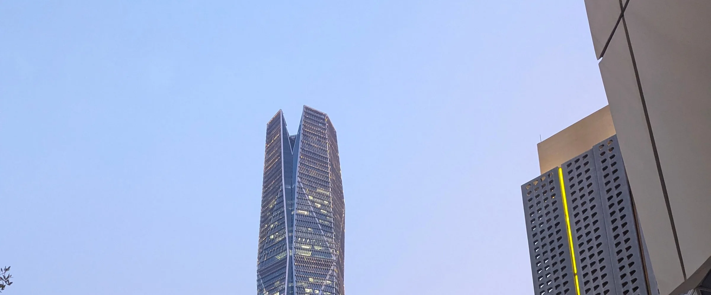

ثلاثة عشر قطاعًا تجمعها منهجية واحدة، ولا يتجاوز أيٌّ منها 17% من السجل.
يُحصي جرد أرشيف هيكلة أكثر من 650 مهمة في 13 قطاعًا بين 2004 و2026. وتسري في جميعها سلسلة المخرجات نفسها وأدلة العمل نفسها وأداة الفرز نفسها، ولا يتجاوز أي قطاع 17% من السجل. وتعرض صفحة كل قطاع ما نقدّمه فيه، وكيف نصنع القيمة، والحالات المستخرجة من السجل.
المهام حسب القطاع
650مهمة في القطاعات الثلاثة عشر بين 2004 و2026
أخبرنا في أي قطاع يقع تكليفك، ويمكن أن نبدأ باتفاقية عدم إفصاح.